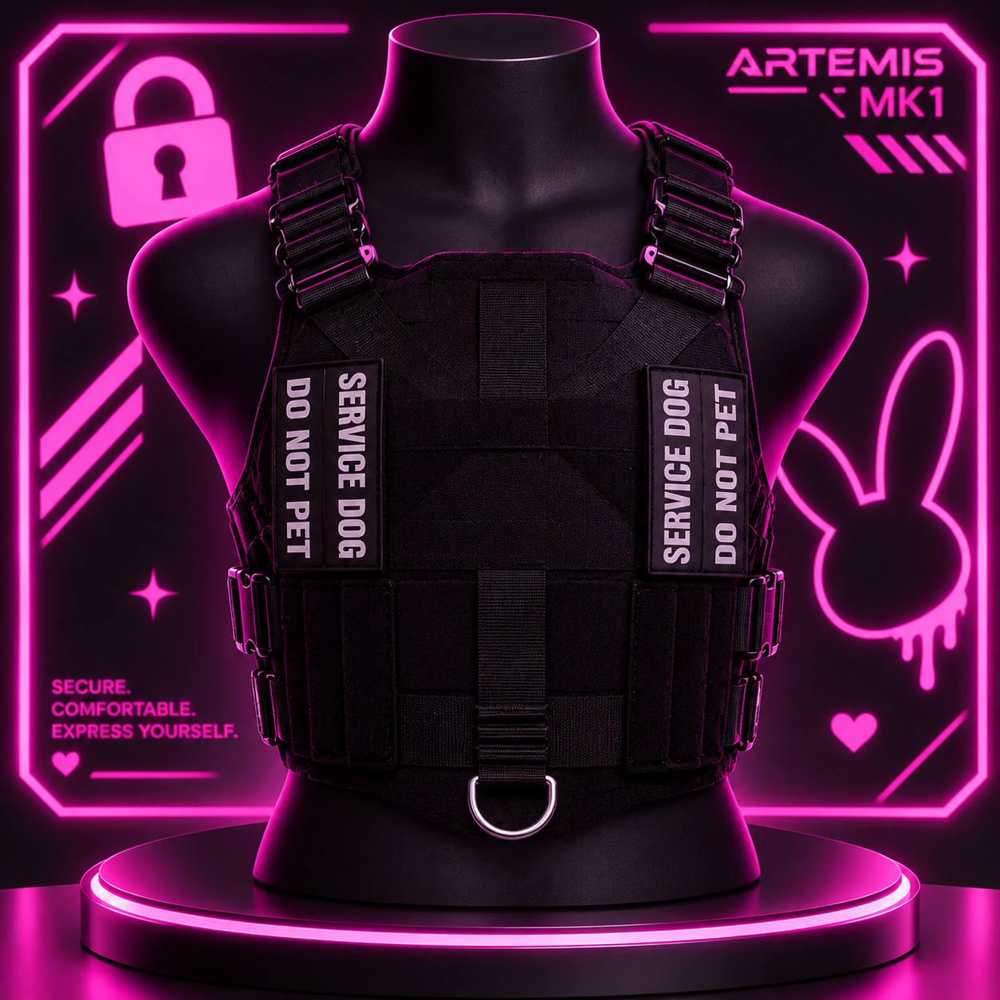

Artemis Systems MK 1 // Secure chassis, modular payload.
The Artemis MK.I is a modular, form-fitting service harness inspired by traditional working-dog harness construction, re-engineered and retrofitted specifically for human wear. Handcrafted from durable 500D Cordura Nylon and breathable spacer mesh, it combines the recognizable structure and functionality of a service-dog harness with an ergonomic, human-adapted fit.
Abrasion-resistant 500D Cordura exterior paired with padded, breathable spacer mesh for comfortable extended or overnight wear.
Collar-free vertical shoulder straps with welded 1-inch metal D-rings and quick-release shoulder buckles eliminate neck pinch and chest flare.
Centered Velcro placard supports custom embroidered patches above a heavy-duty lower steel D-ring and side MOLLE webbing.